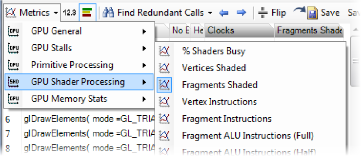
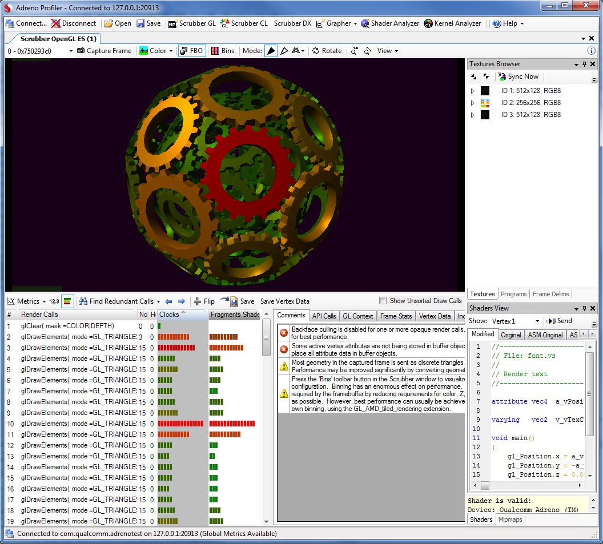

This tutorial explains how to capture performance information for individual render calls.
After connecting to a device, create a new scrubber via the main toolbar.
Click ont he 'Metrics' drop down menu on the Trace view toolstrip to get the list of metrics supported by the connected device. The tooltip displays information about the selected metric.
• Note that Scrubber metrics are only supported by Adreno 200+ series devices.
Click on the desired metric and a column should be added to the Trace view were values will be populated upon capture. Please note that if a capture has been done previous to attaching metrics the scene needs to get recaptured for the values to get populated.

To enable and capture a Scrubber metric:
 Click on the disred metric from the Metrics drop down. The metric
will appear as a new column in the call trace listing
at the bottom of the Scrubber. Multiple Scrubber metrics may be enabled this way.
Click on the disred metric from the Metrics drop down. The metric
will appear as a new column in the call trace listing
at the bottom of the Scrubber. Multiple Scrubber metrics may be enabled this way.
• Note that due to concurrency restrictions in the embedded hardware, there are limits to how many metrics can be enabled simultaneously. Adreno Profiler will convey those limitations by highlighting metrics in red as they become unavailable.
 Next, Capture a new frame from the device. After the
frame downloads, any metrics columns you have added will be filled with the values of the
enabled metrics for each render call within the frame.
Next, Capture a new frame from the device. After the
frame downloads, any metrics columns you have added will be filled with the values of the
enabled metrics for each render call within the frame.
To stop capturing a metric, click on the metric again within the Metrics drop down menu.
Scrubber metrics can be visualized in several ways:
 By default, the collected metrics are displayed as a vertical histogram alongside the API calls.
By default, the collected metrics are displayed as a vertical histogram alongside the API calls.
 You can also view the raw numerical metric data. Select this mode using the toolbar above the call trace.
You can also view the raw numerical metric data. Select this mode using the toolbar above the call trace.
 If you click on a column in the call trace that contains metrics data, the scene in the emulator
view will be colorized according to the selected metric as shown in the following screenshot.
If you click on a column in the call trace that contains metrics data, the scene in the emulator
view will be colorized according to the selected metric as shown in the following screenshot.
